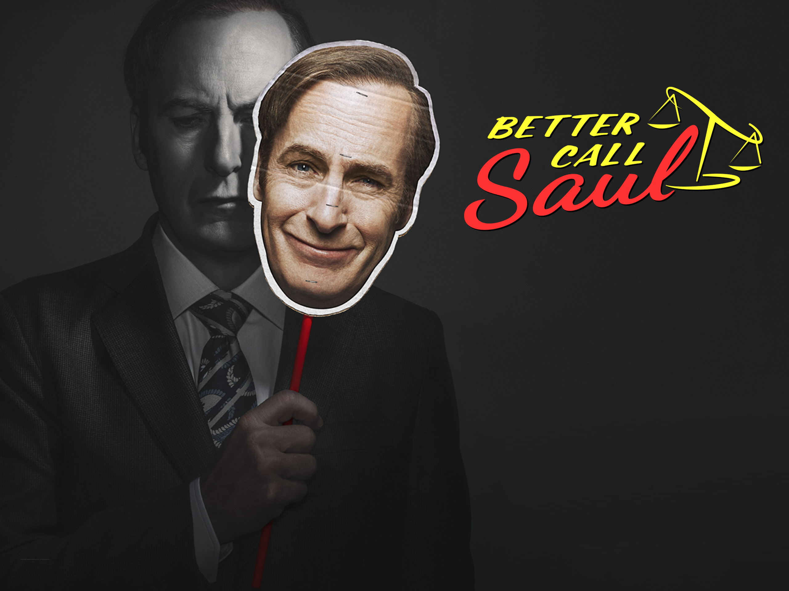

“Better Call Saul” is an American legal crime drama TV series developed by Vince Gilligan and Peter Gould for AMC. It’s part of the “Breaking Bad” franchise and functions as a spin-off of Gilligan’s earlier series, “Breaking Bad” (2008–2013). Primarily serving as a prequel, “Better Call Saul” is set before and during the events of “Breaking Bad,” with certain scenes extending into the post-“Breaking Bad” timeline.
Plot
The series begins with Jimmy McGill, played by Bob Odenkirk, working as a struggling lawyer trying to establish his legal career. Jimmy is a good-hearted but morally flexible attorney who often finds himself on the wrong side of the law while trying to make ends meet.
As the series progresses, Jimmy’s personal and professional life becomes increasingly complex. He grapples with ethical dilemmas and faces challenges both in and out of the courtroom. Throughout the show, we witness Jimmy’s transformation into Saul Goodman, the flamboyant and unscrupulous lawyer known for his colorful personality and questionable legal tactics.

Season 4 Poster
Ratings and Statistics
The debut season boasts a 97% approval rating on Rotten Tomatoes, accompanied by an average score of 8.1/10 from 291 reviews. The critical consensus on the website reads, “Better Call Saul is a distinctive, shadowy character exploration that asserts its independence without being overshadowed by its predecessor.” Metacritic, employing a weighted average, awarded the season a “generally favorable” score of 78 based on 43 reviews.
Season 2 also boasts a 97% approval rating on Rotten Tomatoes, achieving an average score of 8.7/10 from 182 reviews. The critical consensus on the site remarks, “Better Call Saul continues to captivate audiences with a collection of episodes that inject new dramatic energy while showcasing the talents of its lead.” Metacritic assigned the season a score of 85 out of 100, based on 18 critics, signifying “universal acclaim.”
The 3rd season maintains a 98% approval rating on Rotten Tomatoes, with an average score of 8.75/10 based on 175 reviews. The critical consensus on Rotten Tomatoes asserts, “Better Call Saul remains steadfast in season 3, as the introduction of more familiar characters accelerates the inevitable transformation of its protagonist.” Metacritic awarded the season a score of 87 out of 100, based on 18 critics, indicating “universal acclaim.”
In its 4th season, Better Call Saul achieves a 99% approval rating on Rotten Tomatoes, earning an average score of 8.9/10 from 185 reviews. The critical consensus on Rotten Tomatoes notes, “Well-crafted and compelling as always, Better Call Saul adeptly balances its current identity with its inevitable evolution.” Metacritic awarded the season a score of 87 out of 100, based on 16 reviews, indicating “universal acclaim.”
The 5th season similarly holds a 99% approval rating on Rotten Tomatoes, earning an average score of 8.9/10 from 185 reviews. The critical consensus on the site reads, “Anchored by Bob Odenkirk’s endlessly nuanced, authentic performance, Better Call Saul’s fifth season offers a darkly humorous, vividly realized exploration of tragedy.” Metacritic awarded the season a score of 92 out of 100 based on 16 critics, signifying “universal acclaim.”
The final season, season 6, maintains a 99% approval rating on Rotten Tomatoes, achieving an average score of 9.4/10 from 182 reviews. The critical consensus on Rotten Tomatoes states, “Better Call Saul remains just as masterfully controlled as Jimmy McGill insists he is in this ultimate season, where years of simmering storytelling culminate in a scintillating climax.” According to Metacritic, the season received a score of 94 out of 100 based on 20 critics, indicating “universal acclaim.”
Better Call Saul premiered on the cable network AMC, attracting 4.4 million viewers aged 18–49 and 4 million viewers aged 25–54, with an overall viewership of 6.9 million. This marked the highest-rated scripted series premiere in basic cable history at the time, though it was later surpassed by another AMC show, Fear the Walking Dead.
In December 2013, Netflix announced that the entire first season would be available for streaming in the U.S. after the first-season finale aired, with episodes released shortly after in Latin America and Europe. However, the first season didn’t arrive on Netflix in the U.S. until February 1, 2016. Internationally, episodes from the second season were available for streaming the day after their U.S. airing.
Netflix was the exclusive video-on-demand provider for the series, available worldwide except in Australia and New Zealand. In Australia, Better Call Saul premiered on Stan on February 9, 2015, becoming the flagship program. In New Zealand, it was exclusive to Lightbox until 2020 when both services merged into Neon.
In the UK and Ireland, Netflix acquired the series in December 2013, premiering the first episode on February 9, 2015, followed by weekly releases. In Ireland, it also aired on TV network TG4 starting October 18, 2022. In India, episodes were broadcast on Colors Infinity within 24 hours of the U.S. airing.
During the final season in 2022, episodes were available for streaming on AMC+’s streaming service the same day they premiered on AMC. The season premiere led to the highest number of new subscriber sign-ups for AMC+, with a significant increase in episodic viewership on the platform by the mid-season finale. The series finale caused an app outage due to high demand, with first-day viewing numbers on AMC+ four times higher than the season premiere, making it the biggest acquisition driver in the history of the streaming service according to AMC.
Viewership
Season
First aired
Viewers (millions)
Last aired
Viewers (millions)
1
February 8, 2015
6.88
April 6, 2015
2.53
2
February 15, 2016
2.57
April 18, 2016
2.26
3
April 10, 2017
1.81
June 19, 2017
1.85
4
August 6, 2018
1.77
October 8, 2018
1.53
5
February 23, 2020
1.60
April 20, 2020
1.59
6A
April 18, 2022
1.42
May 23, 2022
1.19
6B
July 11, 2022
1.16
August 15, 2022
1.80
library(ggplot2)season <-c(1, 2, 3, 4, 5, "6A", "6B")average_views <-c(3.21, 2.16, 1.64, 1.49, 1.37, 1.27, 1.27) data2 <-data.frame(Season = season, Average_Views = average_views)ggplot(data2, aes(x = Season, y = Average_Views, group =1)) +geom_line(color ="red") +geom_point(color ="red", size =3) +labs(x ="Season", y ="Average Viewers (millions)", title ="Average Viewership Over Seasons") +theme_gray()
According to the graph, the average viewership had declined with each season. The most dramatic drop in average views occured between seasons 1 and 2, where the figure decreased by 32.71 %. Similarly, the views fell by 24.07 % between seasons 2 and 3. After season 3, the number of average views plunged at a relatively constatnt rate. By the end of the show (last two seasons), the figure for average views remained at the same level (1.27 million).